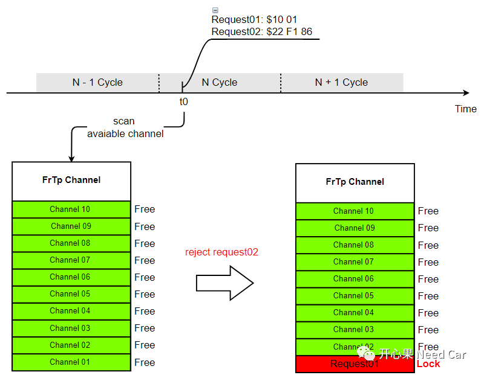
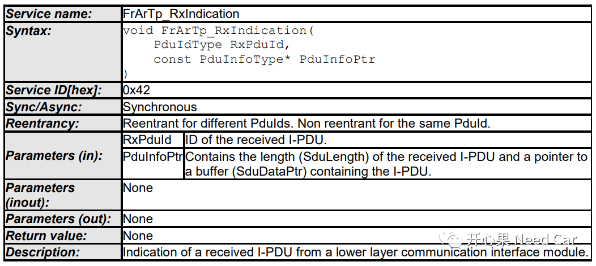
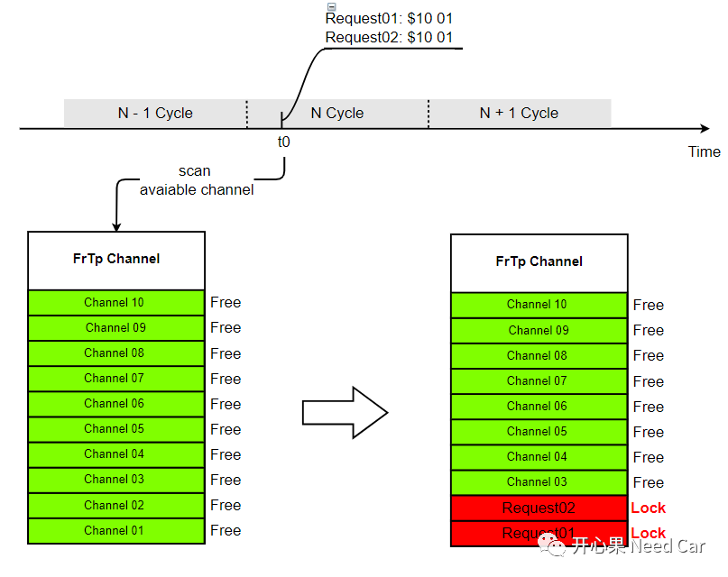
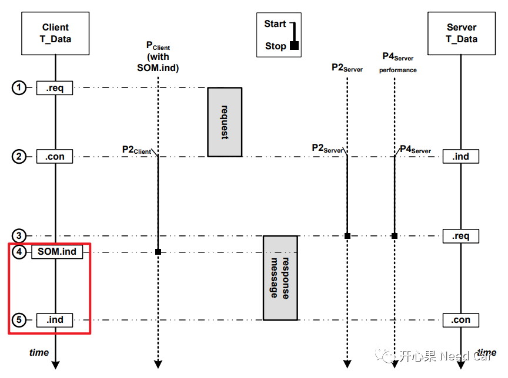
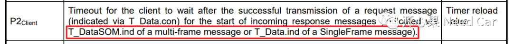
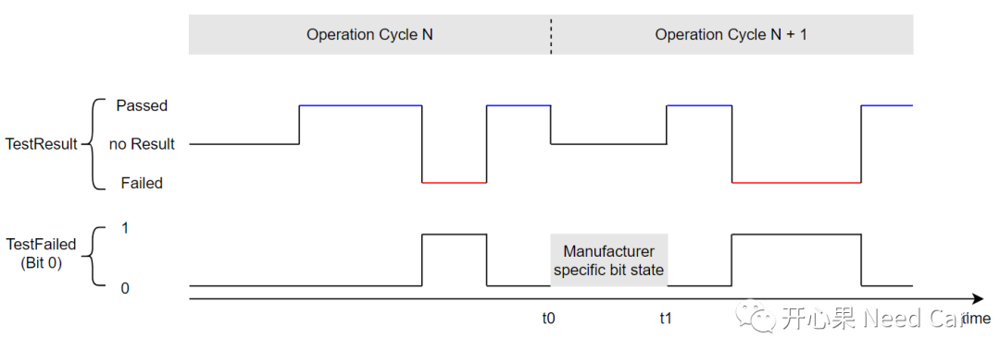
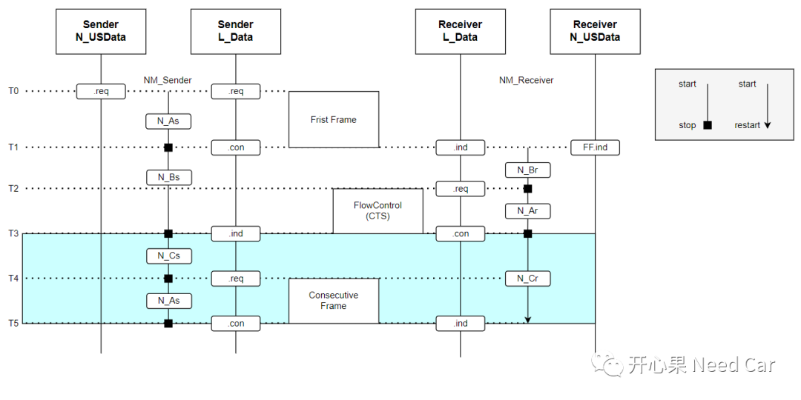

“三餐茶饭，四季衣裳共同造就了一个叫家的地方，人因食物而聚，人不散，家就在，烟火人间，风味常存。”—第七集《万家灯火》
QA1：Xx_Tp层，如果配置多个通道，为什么不能同一时间缓存同一Destination Address的多个诊断请求？
答：先对问题作进一步描述：假设诊断命令通过Flexray总线传输，且目标节点FrTp开辟10个Channel。在Application中，t0时刻，对目标节点（比如：Destination Address:0x1603）发送连续的两帧诊断请求(比如：Request01:$10 01和Request02:$22 F1 86)，只有Request01被接收（FrTp的Channel01处理），而Request02被忽略，不能被处理。
FrTp有10个Channel可用，为什么不能用FrTp的Channel02接收Request02？实际处理如下所示：

在回答这个问题之前，我们先看一下Autosar对接收的处理，Flexray接收的诊断请求通过FrArTp_RxIndication()通知到FrTp层。FrArTp_RxIndication()原型如下所示：

QA2：Xx_Tp层，配置多个Channel的目的是什么？
答：处理并列请求（Parallel Request）。假设诊断命令通过Flexray总线传输，且目标节点FrTp开辟10个Channel。在Application中，t0时刻，对两个不同的目标节点（比如：Destination Address:0x1603、Destination Address:0x1604），分别发送诊断请求(比如：Request01:$10 01和Request02:$10 01)。
由于Request01:$10 01和Request02:$10 01的目标节点不同，对应的RxPduId不同，因此FrArTp_RxIndication()可以被调用两次，之后分别与空闲的Channel01、Channel02建立连接，进而两个诊断指令可以在同一时刻被接收、处理，如下所示：

QA3：P2Client对应的T_DataSOM.ind、T_Data.ind区别是啥？
答：T_DataSOM.ind和T_Data.ind分别对应下图的4、5时刻，如下所示：

搞清楚T_DataSOM.ind和T_Data.ind之前，需要先解释清楚P2Client：当Client发送的诊断请求被确认（Confirmation），表明诊断数据成功发送到对应总线，此时开始P2Client计时，什么时候停止呢？如果接收到的响应需要多帧传输，则收到首帧的时候就需要停止P2Client计时，即SOM.ind时刻（上图4时刻），而完整的响应数据需要额外的时间才能接收完成，即.ind时刻（上图5对应时刻）。如果响应数据是一个单帧，则T_DataSOM.ind和T_Data.ind表示同一时刻。
P2Client的官方解释如下所示：

QA4：下一个Operation Cycle，Bit 0状态如何变化？
答：取决于需求。此问题属于Uds诊断：不同Operation Cycle下的DTC状态位变化补充。DTC状态位bit0在下一个Operation Cycle，没有上报Failed/Passed之前，应该是多少？14229中没有明确约束，这个位的状态由主机厂（OEM）需求决定，即：bit0 =0/1均可。
如下：Operation Cycle N + 1，t0~t1期间，没有上报Passed或者Failed状态，此时Bit 0的状态取决于需求，即：0、1均可。

QA5：流控帧(FC)和第一个连续帧(CF)之间间隔需要满足STmin约束吗？
答：需要。多帧数据传输的过程中，收/发双方为了确保数据交互的稳定性，会使用流控帧（FC：Flow Control）告知发送方，接收方的数据处理能力。这些参数中，就包括STmin参数，即：发送连续帧的最小间隔。比如：STmin = 1，表示接收方要求发送方以≥ 1ms的间隔发送连续帧(CF:Consecutive Frame)。0.5ms间隔（＜ 1ms）是不允许的，因为接收方的处理能力不够，无法每0.5ms的间隔接收一个CF。当然，这也约束着发送方从收到FC到发出第一个CF的时间间隔，即：≥ 1ms。
如下所示，T3~T4 ≥ 1ms。


参考资料
SIMPLE TITLE
往期精彩回顾